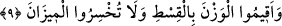

9. Ölçüyü adâletle tutun ve eksik tartmayın.
“Ölçüyü adâletle tutun.” Ölçünüzü adâletle yâni dosdoğru yapın. Müfredat’ta şöyle
denmiştir; Vezn’den maksad, bir şeyin miktarını bilmektir. Halk arasında bilinen vezn;
terazi, kantar, baskülle ölçülen ve miktarı belirlenen şeylerdir. “Ölçüyü adâletle
tutun” âyet-i kerîmesi, insanların arayıp önem verdiği bütün söz ve davranışlarda
adâlet ölçülerine riâyet etmeyi emreder.
“Ve eksik tartmayın.” Yâni noksan tartmayın. Çünkü, tartı ve terazinin hakkı onu
doğru dürüst yapmaktır.
Sa’dî Müftî demiştir ki: Kasd edilen mânâ, terazinin ve ölçünün kendisi değildir.
Ölçülen şeyi eksik yapmayın, demektir. Âyet-i kerîme’de önce ölçünün doğru dürüst
yapılması emredilmiş, sonra da haddi aşmaktan nehy edilmiştir ki o dengeyi bozmak
vefasızlıktır. Sonra da eksik ve noksan tartmak suretiyle insanların aldatılması
yasaklanmıştır. Ölçü ve terazi kelimesi, ölçünün doğru dürüst olarak kullanılmasını
pekiştirmek ve güçlendirmek için tekrar edilmiştir.
Kâşifî şöyle demiştir: “Terâzi kullananlara bu şekilde dikkat çekilmesinin sebebi,
kıyâmet günü mizân kurulduğunda utanmalarına mâni olmak içindir.”
Terazi ve ölçekte kendi elinle azalttığın
Her bir arpa veya tohum tanesi,
Bunların her birinin bir yeri (hesabı) vardır
Kıyâmet günü hepsini önüne getirirler.
Sana az verip çok aldığını,
Gizlice yaptıklarını elbet gösterirler.
Mâlik b. Dinâr (r.a.)’den rivâyet edilmiştir ki, ölüm döşeğinde ölmek üzere olan
komşusunu ziyarete gittiğinde hasta komşusu ona: “Ey Mâlik önümde ateşten iki tepe
var, onların üzerine çıkmağa beni zorluyorlar,” dedi. “Onu ailesine sordum,” dediler ki,
“Onun iki terazisi vardı. Biri ile kendisine bir şey alırken, diğeri ile de başkasına bir
şey satarken tartardı.” “Onları bana getirin,” dedim ve birbirine vurarak parçaladım ve
adama, “değişiklik oldu mu?” diye sordum. “Bir değişiklik olmadı, yalnız ateşten
tepeler daha da büyüdüler,” dedi.
Müfredat’da şöyle denir: “Ve eksik tartmayın” âyet-i kerîmesi’nden bütün ölçü ve
tartılarda adâleti aramanın, ölçü ve tartı ile alınıp verilen şeylerde haksızlık ve zulmü
terk etmenin gerektiğine işâret edilmektedir. Ayrıca, kıyâmet gününde terazisi zarar ve
hüsran içinde olmayacak şekilde alış veriş etmek ve haklarında “Ameli yeğin (hafif,
az) olana gelince, işte onun anası (yeri yurdu) Hâviye’dir (cehennemdir)” (Kâria,
101/8) buyurulan kimselerden olmamak gerektiği konusunda uyarı vardır. Her iki mânâ
da birbiriyle çok yakından ilgilidir. Allah’ın Kur’ân-ı Kerîm’de zikrettiği her hüsran bu